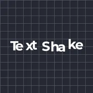
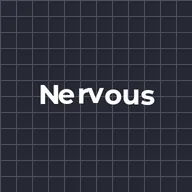
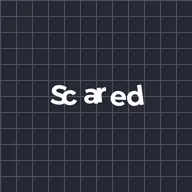
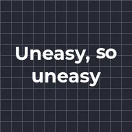
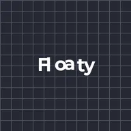
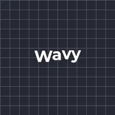
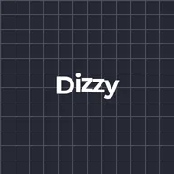
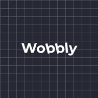

Metin sarsıntısı

Her harfi ayrı ayrı sarsar; oyundaki gergin bir diyalog gibi. Sarsıntı harfleri noktalar arasında kaydırır, Titreme her adımda yeni bir noktaya atlar, Dalga harfleri aşağı yukarı sallar, Daire onları küçük döngülerle gezdirir, Yalpalama ise ileri geri yatırır. Yalnızca bazı harfleri sarsmak için Sarsılan harfler değerini düşürün; harfler birkaç anda bir yeniden rastgele seçilir.
Metin sarsıntısı, bir oyundaki gergin bir konuşma gibi her harfi kendi başına hareket ettirir. Bir Stil seçin:
- Sarsıntı her harfi rastgele noktalar arasında kaydırır, Titreme ise her adımda yeni bir noktaya sıçrar. Miktar piksel olarak ne kadar uzağa gideceğini, Hız saniyede kaç yeni nokta olacağını belirler ve Döndürme harflerin de dönmesini sağlar.
- Dalga harfleri aşağı yukarı sallar, Daire onları küçük döngüler içinde hareket ettirir ve Yalpalama onları Eğ açısı kadar ileri geri yatırır. Bunlarda Hız saniyedeki dalga sayısıdır (Hz) ve Yayılım dalgayı bir harften diğerine kaydırır.
Sarsılan harfler %100'ün altındayken harflerin yalnızca bir kısmı sarsılır ve Harfleri yenileme aralığı her birkaç saniyede bir rastgele yeni bir küme seçer. Şuna göre her karakteri, her kelimeyi veya her satırı sarsar. Başlangıç ve Bitiş sarsıntıyı metnin bir kısmıyla sınırlar ve Tohum başka bir rastgele desen verir. Hızlı başlamak için bir ön ayar deneyin: Gergin, Korkmuş, Tedirgin, Süzülen, Dalgalı, Sersem veya Sallantılı.
Ayarlar
| Ayar | Tür | Aralık | Varsayılan |
|---|---|---|---|
| Stil | Seçim | Sarsıntı, Titreme, Dalga, Daire, Yalpalama | Titreme |
| Miktar | Sayı | 0 px – 200 px | 4 px |
| Hız | Sayı | 0 /s – 120 /s | 24 /s |
| Hız | Sayı | 0 Hz – 20 Hz | 1 Hz |
| Yayılım | Açı | -360° – 360° | 30° |
| Döndürme | Açı | -180° – 180° | 0° |
| Eğ | Açı | -180° – 180° | 15° |
| Sarsılan harfler | Sayı | 0% – 100% | 100% |
| Harfleri yenileme aralığı | Sayı | 0.05 s – 10 s | 0.6 s |
| Şuna göre | Seçim | Karakter, Kelime, Satır | Karakter |
| Başlangıç | Sayı | 0% – 100% | 0% |
| Bitiş | Sayı | 0% – 100% | 100% |
| Tohum | Sayı | 0 – 1000 | 1 |
Ön ayarlar
Efekt Kitaplığı'nda efektin ayrıntı sayfasından birini seçin. Her biri düzenlemeye devam edebileceğiniz hazır bir ayardır.

Gergin
Korkmuş
Tedirgin
Süzülen
Dalgalı
Sersem
Sallantılı